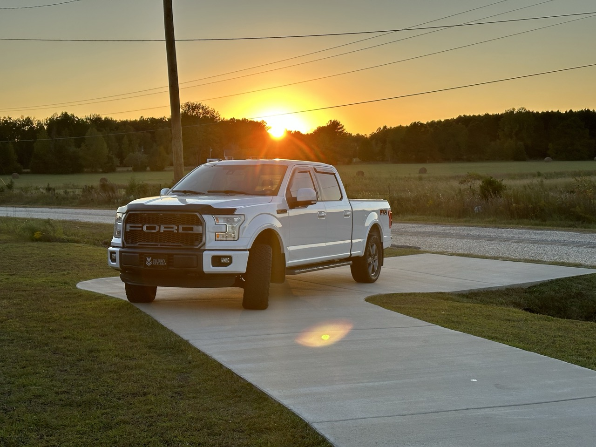

These are some of the things I like to do when I'm not working, or practicing code.
Cooking & Grilling
I spent a lot of time in the kitchen with my mom when I was young. Her favorite taste tester! Well, that carried into adulthood and while I may not bake or cook often, I've got the skills to make it happen. But what I've really grown to LOVE is getting on a smoker and grill. There's something oddly satisfying about firing up the smoker for a late night or early morning burn!

Collecting Kicks
BIG TIME Sneakerhead! I have a Jordan sneaker fetish that thankfully isn't as bad as most. While I like the style and different colorways that release, I'm not the "OMG, gotta buy the new pair" guy. I hae my favorites, and usually stick with them in their various new colorways. Also, my closet wouldn't be complete without at least 3 pairs of Timberland boots.

Working on my Truck
I've always like cars, trucks, and motorcycles, and had my share of each. But long gone are the days of doing motor swaps and rebuilds. This is my current pride and joy, Belle. Although I don't get to tinker with her the way I'd like to, she's still fun and nice to look at!
